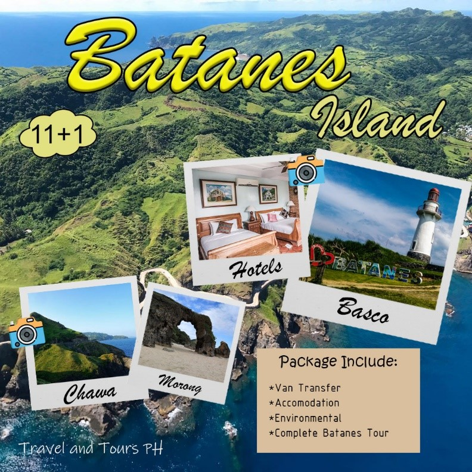
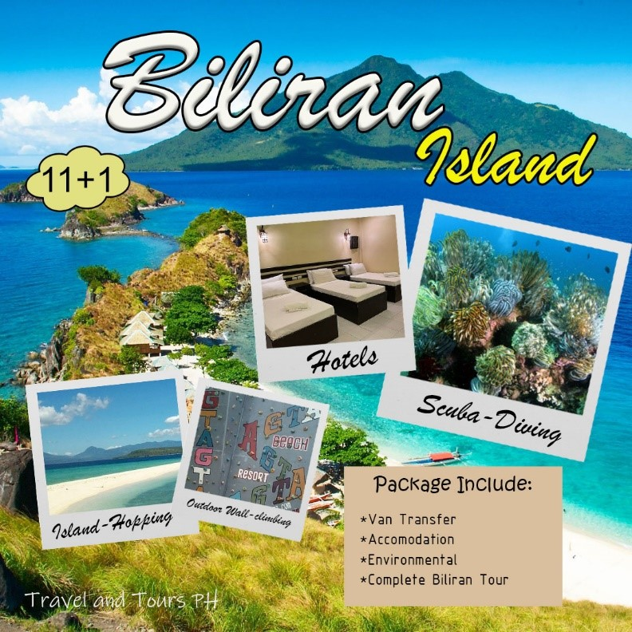
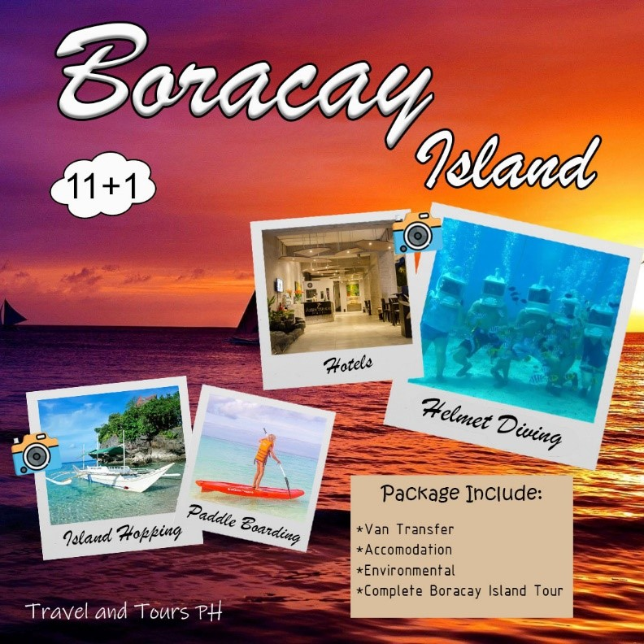

|  |
Visit Batanes Now!The Batanes group of islands is located at the northernmost tip of Philippine territory. It is known for its scenic waters and terrain and clean environment. Batanes is also recognized for the unique culture of the islands' first settlers, the Ivatans. |
|  |
Visit Biliran Now!Biliran is an island province of Eastern Visayas on the western side of the region. It is bounded on the south by Caragara Bay, Samar Sea on the east, North by the Visayas Sea and the strait of Biliran on the West |
|  |
Visit Boracay Now!Boracay is a tropical island about an hour's flight from Metro Manila in the Philippines. It has superb long white sand beaches and is one of the country's most developed tourist destinations. |

|
Visit Baguio Now!Baguio is a landlocked city located 250 kilometers north of Manila, in the heart of the province of Benguet. It has a land area of 57.5 km². It is known as the gateway to the Cordillera of the mountain provinces of Northern Philippines. |